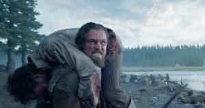

Quintus can be found at qcurtius.com. He is the author of the books On Duties, Thirty Seven, Sallust: The Conspiracy Of Catiline And The War Of Jugurtha, and other books. His work has been reviewed at Taki's Magazine. He can be followed on Twitter


I’ve been disappointed so many times by mainstream Hollywood movies that in recent years I’ve come to expect very little. And this is what makes my viewing of Alejandro G. Iñárritu’s brilliant The Revenant such an unexpected joy: the awareness that great films can still be made in America, if only the right perspective is taken.
There is a story—possibly apocryphal—that British general James Wolfe, after having heard Thomas Grey’s Elegy Written In A Country Churchyard, told his officers, “Gentlemen, I would rather have written that poem than take Quebec tomorrow.” Now I know what he felt like. I so wish I could have been involved in the composition of this cinematic masterpiece.
And make no mistake. The Revenant is a truly great film, a creation of surpassing and harrowing beauty. This is the film that every man should see, right now.
There is no “you-go girlism” here. No “girl-power” nonsense. No in-your-face political correctness. No subtle social engineering agenda lurking in the background. No corporate product endorsements.

There are only the stark, unvarnished themes of man’s eternal struggles: courage, adversity, suffering, redemption, and revenge, related with engaging honesty and simplicity. The Revenant achieves philosophic grandeur without one single word of preaching.
It just does it by telling its story. And all of these themes are played out against the vast panorama of Nature’s terrifying vastness, which makes all our endeavors seem so pitiful by comparison.
The film is based on a 2002 novel by Michael Punke, who apparently based his work on the actual experiences of a frontiersman named Hugh Glass. The plot is a simple one, as it should be. The year is 1823, and an expedition of fur-trappers the Western territories is getting ready to transport its haul of pelts (very valuable in those days) back to civilization.
But then disaster strikes. The camp is attacked by a war party of Ree Indians (in what surely must be the most graphic scene of frontier warfare ever filmed), and most of the men are killed. A small party is left to try to make its way back to civilization. We thus have that eternal, great theme, which goes all the way back to Xenophon’s Anabasis: the fight through hostile territory to return home.
But this is a human drama as well.
The surviving band of trappers is forced to rely on their experienced tracker Glass (Leonardo DiCaprio) to lead them back. Glass is a mysterious, taciturn man. He obviously has lived among the Indians and knows their ways; he speaks their languages, had an Indian wife, and has a half-Pawnee son named Hawk (Forrest Goodluck).
We are never told the whole story of Glass’s life, but he is haunted by recurring flashbacks of the apparent slaying of his wife during one of the many frontier Indian wars of the era.
His wife’s voice speaks to him in poetic riddles, a wonderful technique that recalls the profound and brooding voice-overs of Terence Malick’s 1998 masterpiece The Thin Red Line. Maybe this is not just a coincidence, since The Revenant’s cinematographer, Emmanuel Lubezki, has worked on Terence Malick’s most recent films.
Within the party itself, there is tension and conflict. Our interest is immediately focused on the other main protagonist of the film, John Fitzgerald (Tom Hardy). Hardy plays this character with such subtlety and precision that he nearly steals the movie.

The great quest, played out against a stark landscape
Fitzgerald is one of those personality types we find in nearly every large collection of adventurers or soldiers. He is not lacking in physical courage, but nevertheless is entirely without a moral compass. He cares about his own money and his own survival, and not very much about anything else.
And when the chips are down, his egoism dominates his every action. Perhaps his background has something to do with it: we learn that he was once attacked by Indians and scalped. If so, his trauma has turned him into a self-seeking monster, able to lie, cheat, and kill without hesitation.
Hardy has been everywhere in film in recent years, yet this role must rank among his best. His accent and demeanor are so impeccable that we barely recognize him. Hardy can do accents: those who doubt this should hear his Welsh accent in his 2014 film Locke.
Soon after the attack by the Ree tribe, Glass is mauled by a bear in one of the most incredible and unique fight scenes every put on film. I have no idea how this scene was put together, but it is entirely convincing, to the extent that I could nearly feel the grizzly’s teeth scraping against my skull.
Glass survives the attack, but just barely. The remaining members of the party then are forced to decide whether to carry him or leave him to his fate. Carrying him soon proves impossible. So the plan is to have a few men stay behind, for a promised reward, and try to nurse him back to health. Fitzgerald is among those chosen, along with Glass’s son and another hapless young hunter.
As might be expected, Fitzgerald soon turns to treachery. He murders Hawk and tricks the other hunter into abandoning Glass to his fate. And thus the stage is set for the most epic story of survival and suffering ever put on film.
Abandoned and left for dead
We are told that The Revenant took nine months of grueling location shooting to piece together. The cast and crew flew to remote locales in Argentina, Canada, and the United States, and all filming was done in natural light. We are thus immersed completely in the blood-freezing beauty and power of Nature, with no filters or barriers between us and the great Reality.
There is no sentimentality here. The Indians are neither glamorized or idealized (as in Dances With Wolves). They are presented exactly as what they were: a people like any other, with the capacity to inflict extreme cruelties as well as the most transcendent kindnesses.
None of the characters are one-dimensional, either. They all act with the logic of their own internal voices; and even Fitzgerald, after a time, seems to elicit a small measure of sympathy. As for Glass, his quest for vengeance becomes all-consuming, and by the end of the film he has been transformed into almost an agent of Fate.
Like any great film, The Revenant is not perfect. Its running time may be too long for some, and some of the characters overlook obvious holes in Fitzgerald’s lies that are too stark to ignore. But these points are very minor, and do not diminish to impact of the whole.
Immerse yourself in the immensity of Creation, and allow Nature’s frozen gray and white colors to grip you by the throat. Feel the poetry of the limitless scenery, and the mystical mantras that appear in the voiceovers.
The final scene is just right. For we are left with an agent of Fate that has accomplished its purpose, but must now dare to search for a new reason for being.
Read More: How To Create Your Own List Of Precepts